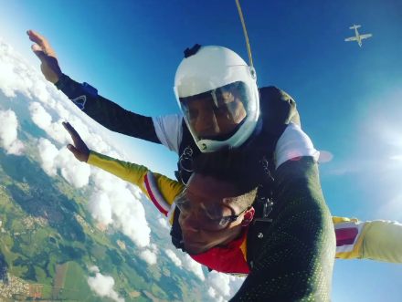

Olá! Meu nome é Laercio dos Santos Simplicio e sou estudante de Engenharia de Software pela UNINTER. Tenho grande interesse por tecnologia, desenvolvimento de software e inovação.
Sou uma pessoa que gosta de desafios e novas experiências. Uma das experiências mais marcantes da minha vida foi saltar de paraquedas, algo que representa bem meu espírito aventureiro e minha vontade de explorar o mundo.
Também adoro viajar e conhecer novas culturas. Já tive a oportunidade de visitar alguns países incríveis, como México, Argentina, Alemanha, Suíça, Áustria e Canadá. Cada viagem me proporcionou novos aprendizados e experiências que ampliaram minha visão de mundo.
Atualmente estou focado em desenvolver minhas habilidades em programação e desenvolvimento web, buscando sempre aprender novas tecnologias e evoluir profissionalmente.